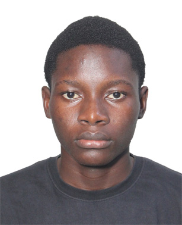

La data rencontre le design. L'analytique rencontre la créativité.

Étudiant en Digitalisation & Sciences de Données au Sèmè City Institute of Technology and Innovation, je construis des ponts entre les besoins métier concrets et le monde technique.
Je ne me contente pas d'analyser. J'utilise la data pour modéliser, prédire et recommander des actions concrètes — puis je donne une forme persuasive et visuelle à ces insights pour qu'ils génèrent un impact réel.
L'architecte du pont entre la data et le design. Je combine la rigueur analytique d'un data scientist et l'agilité créative d'un designer-développeur.
Technologies
Technologies
| Année | Projet / Formation | Description |
|---|---|---|
| 2025 — … | Étudiant, Sèmè City | Sèmè City Institute of Technology and Innovation — Digitalisation & Data Science. |
| 2025 | Projet ICU — MIMIC-III | Analyse exploratoire sur données médicales de soins intensifs — mortalité et durée de séjour. |
| 2025 | Projet Sakila — Business Analytics | Analyse des tendances clients et performances commerciales d'une vidéothèque via SQL & Python. |
Je suis au début de mon parcours. J'apprends la data science, je construis des outils qui servent à quelque chose, et j'essaie de comprendre comment la technologie peut répondre aux réalités concrètes des entreprises africaines. Pas de grands discours — juste du travail honnête.
Ouvert aux collaborations, projets data, stages et conversations autour de la tech & du design. Je suis disponible pour des opportunités freelance ou académiques.
"Je ne me contente pas d'analyser ; je donne une forme persuasive aux insights."Bienvenu DAGA